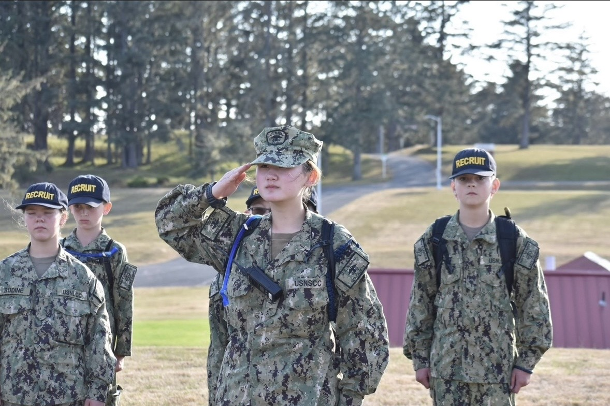
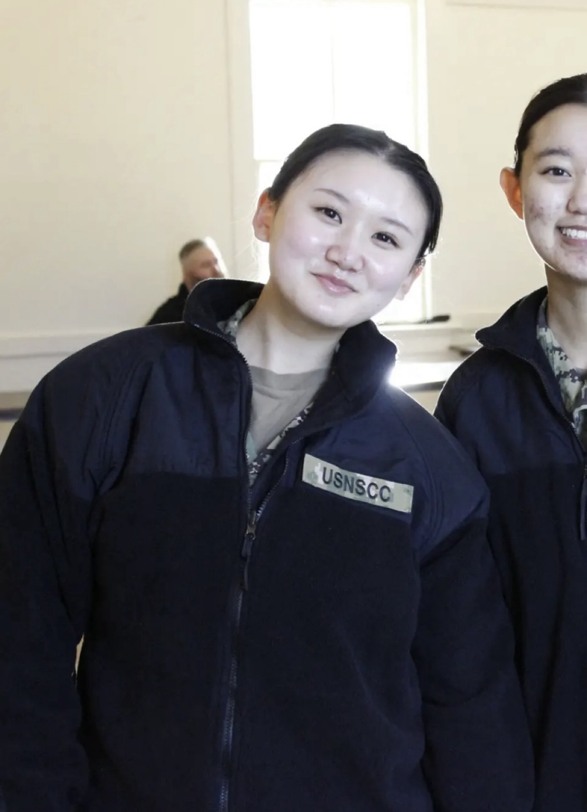
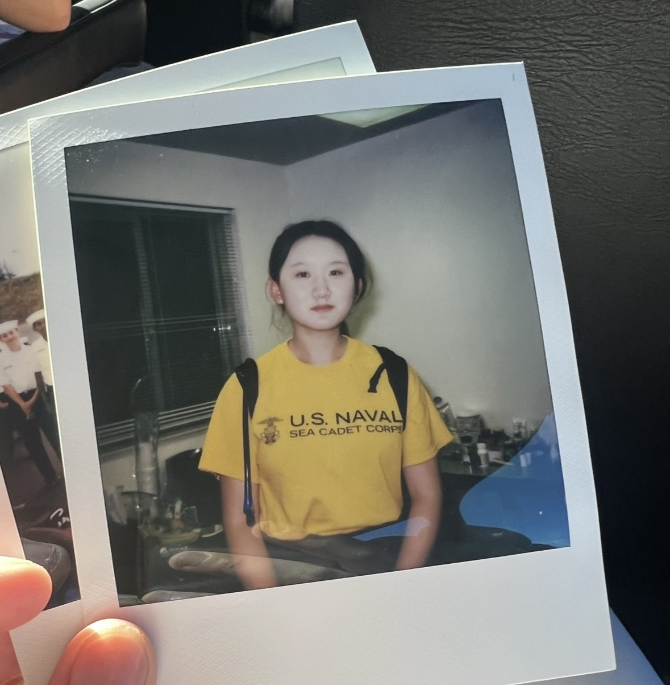
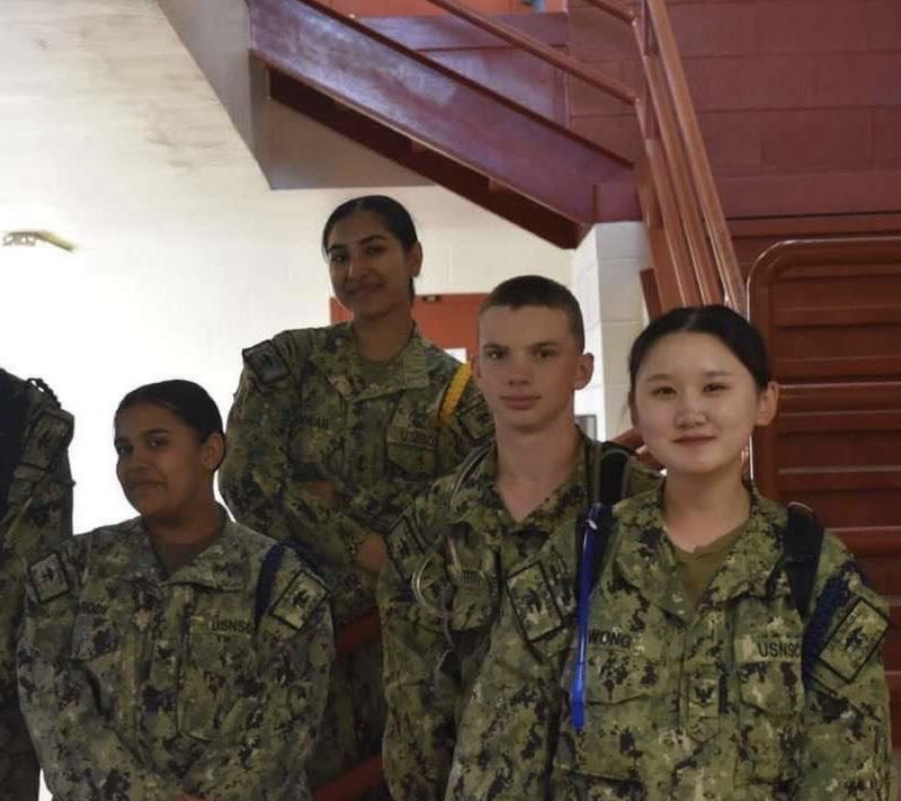
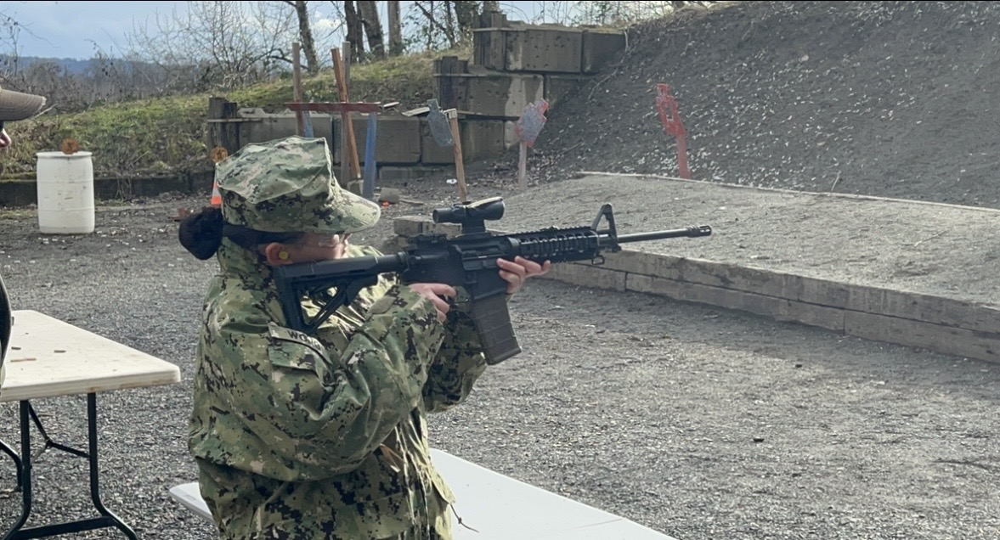

01
Learning to step forward
I joined the U.S. Naval Sea Cadet Corps as a recruit, the Navy-oriented counterpart to ROTC. Every summer and winter brought a new training challenge and a chance to advance.
RecruitTrainingNext rank
After completing recruit training, I could attend specialized medical and engineering programs. Experiencing both fields firsthand gave me an early look at two possible career paths and sparked my interest in where they intersect through biomedical engineering.
LeadershipMedicineEngineering
The program let me move from foundational discipline into hands-on career exploration while continuing to advance through new levels of responsibility.




